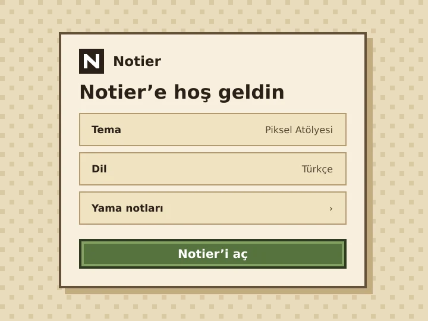

Yerel klasörler
Android dosya seçicisinden bir klasör aç. .md ve .markdown dosyalarını ara, sırala ve sabitle.
Dosyalarında yaşayan
Markdown notları.
Bir klasör seç, notlarını yaz ve biçimlendirilmiş hâlini oku. Yerel dosyalarına çevrimdışı erişebilir veya Google Drive’daki Markdown klasörlerini açabilirsin.

Klasörleri, yazım araçlarını ve önizlemeyi aynı uygulamada yönet.
Android dosya seçicisinden bir klasör aç. .md ve .markdown dosyalarını ara, sırala ve sabitle.
Başlık, bağlantı, liste ve kod kısayollarını kullan. Tabloları ve kod bloklarını önizlemede oku.
Uzun notlarda önizlemedeki listeden bir başlık seçerek doğrudan o bölüme geç.
İzin verdiğinde Drive klasörlerine göz at, Markdown notlarını oluştur veya düzenle. Drive veri kullanımı
Açık, koyu ve Piksel Atölyesi temaları. Yazı tipini, simgeleri ve arayüz boyutunu ayrı ayrı seç.
Kararlı Android sürümlerini denetle, APK’yı aç ve en son denetim sonucunu çevrimdışı gör.
Basamaklı köşeler, katmanlı düğmeler ve renkli piksel simgeleri. Bu temayı karşılama ekranında veya Ayarlar’dan seçebilirsin.

Notier Android 8 ve üzeri cihazlarda çalışır.
Yerel notlar, Markdown düzenleme ve önizleme, daha önce indirilen yama notları ve en son güncelleme sonucu. Yeni sürüm denetimi, Drive üzerinden dosya erişimi ve uzaktaki medya bağlantı gerektirir.
Android uygulaması Kotlin ile yazıldı ve GNU GPL v3 ile yayımlanıyor. GitHub’da kaynak kodu ve Termux derleme adımlarını aç.